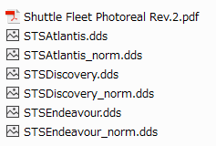
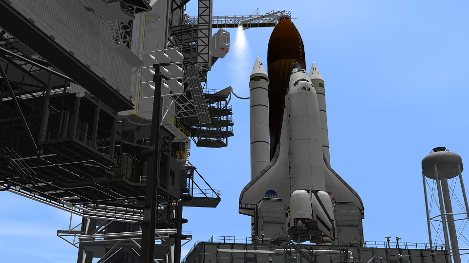

Shuttle Fleet グラフィックMODのまとめ
Shuttle Fleet Photoreal Rev.2
スペースシャトル・オービター（軌道船）を高解像度化するMODです。
以下のリンクからダウンロードしてください。
ダウンロードしたファイルを解凍して、中に入っている6つの.ddsファイルをコピー。
Texturesフォルダにペーストして既存のファイルを上書きします。

注意：バニラでは使えないので、必ずD3D9Clientを導入してください。
注意：Shuttle Fleet以外のスペースシャトル（バニラおよびSSU）では使えません。
注意：アトランティス・エンデバー・ディスカバリーの3機でしか使えません。
Shuttlefleet High detail ET and SRBs
ET（外部燃料タンク）とSRBをディテールアップするMODです。
世代による見た目の違いも再現されています。
Shuttlefleet High detail ET and SRBs
Shuttle-ET-update-V3.0.zipを解凍して、中身をOrbiterフォルダに上書きするだけ。
LC39A+B for ShuttleFleet HD
LC39発射台をディテールアップするMODです。
詳細は以下の記事を参照してください。
LC39A+B for ShuttleFleet HDのダウンロード・インストール
